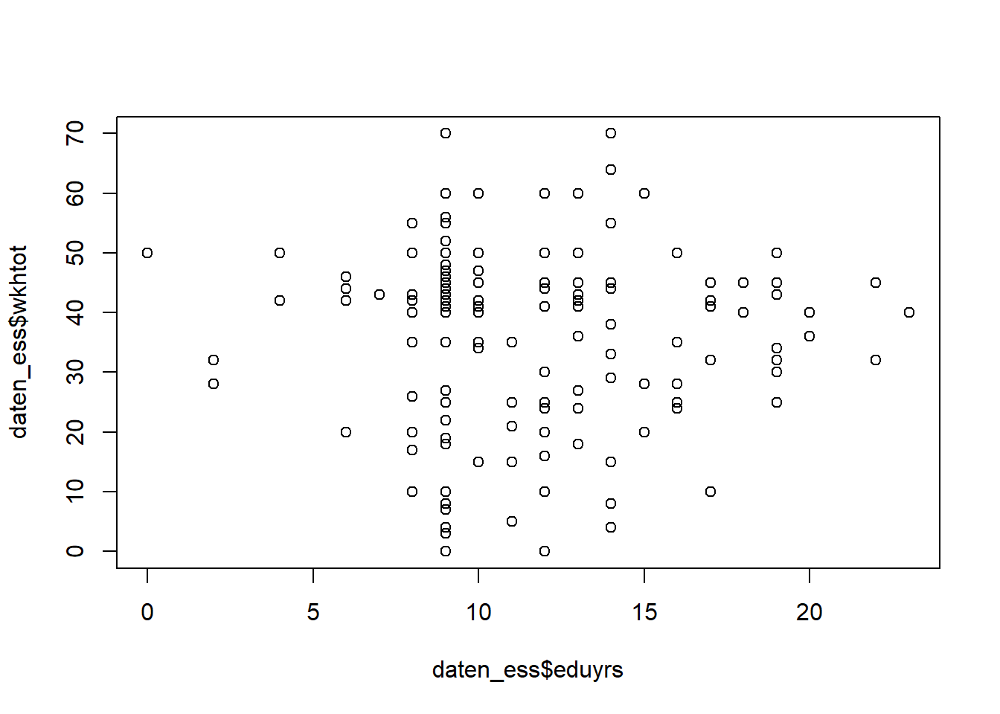
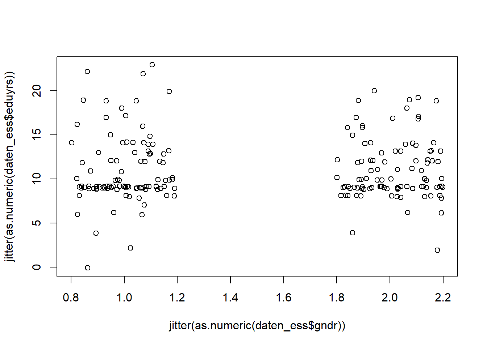
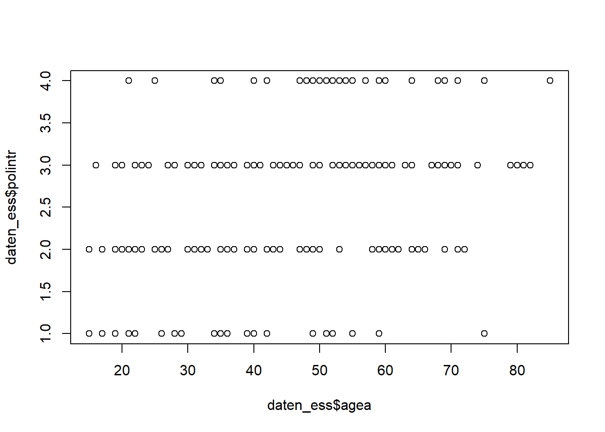
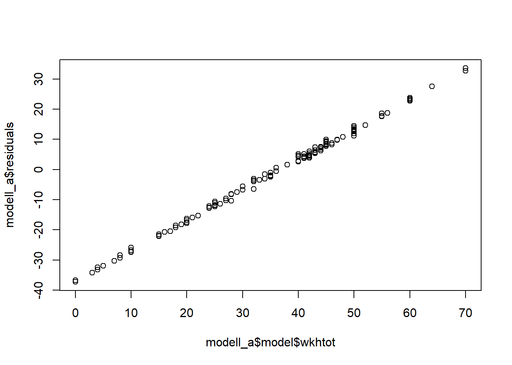

10 Wochenplan 10: Einführung Regression
…im Rahmen der 10. & 11. Einheit.
10.1 Lernziele
Nachdem wir unsere Daten aufbereitet, ersten Analysen mittels Kreuztabellen gemacht und die Faktoren definiert haben gehen wir in der kommenden Woche sukzessive zur Regressionsanalyse über. Dabei behalten wir die Arbeit mit unterschiedlichen Datenformaten (inklusive Faktoren) im Auge. Wir beginnen mit bivariaten Regressionsmodellen und machen uns Schritt für Schritt mit der Definition und Interpretation dieser Modelle in R vertraut.
Konkret lassen sich für den 10. Wochenplan folgende Lernziele definieren:
- Sie sind mit der Funktion
lm()und deren Grundstrukturen vertraut. - Sie kennen die Notation, mit der in R Regressionsmodelle in Formeln dargestellt werden.
- Sie verstehen, wie in einem linearen Regressionsmodell sowohl metrische als auch kategoriale und binominale unabhängige Variablen einfliessen können.
- Sie haben einen ersten Eindruck von der Struktur des “Ergebnisobjekts,” das
lm()erzeugt. - Sie wissen, wie Sie den Modelloutput einer linearen Regression in R interpretieren müssen und die Güte eines Modells einschätzen sollten.
10.2 Aufgaben
- Laden Sie Ihr Datenimport-Skript. Arbeiten Sie anschliessend in einem R Markdown-Dokument weiter.
setwd("C:/Users/SchweglG/R_Daten/06_HS21/R_Seminar-HS21")
source(file = "Daten/ess_import.R")
- Formulieren Sie zwei inhaltliche Fragestellungen, die Sie anhand unserer ESS-Daten mit einem einfachen (bivariaten) Regressionsmodell beantworten können. Eine der beiden Fragestellungen soll eine kategoriale Variable als unabhängige Variable enthalten. Nutzen Sie je ein Streudiagramm, um erste Hinweis zu Ihren Fragestellungen zu erhalten.
Die bivariate Regressionsanalyse berechnet die gerichtete (asymmetrische) Beziehung zwischen zwei metrischen Variablen, in der einfachsten Form einer unabhängigen Variable X auf eine abhängige Variable Y. Dabei repräsentiert X die Ursache und Y die Wirkung. Im Rahmen einer solchen Regressionsanalyse können auch kategoriale Variablen als unabhängige Variablen hinzugezogen werden. Bei kategorialen Variablen mit mehreren Ausprägungen wird allerdings ein multiples Modell generiert, das für die jeweiligen Ausprägungen einmal eine Referenzkategorie und für den Rest eine Dummy-Variable erstellt. Im weiteren Verlauf wird nochmals deutlich, was dies bedeutet.
Hier sollen als vier verschiedenen Beispielen kurz erläutert werden, zuerst zwei für rein metrische Modelle:
- “eduyrs” & “wkhtot”
plot(daten_ess$eduyrs, daten_ess$wkhtot)
Dazu etwa die Erläuterungen von Katrin Oesch:
“Arbeiten Personen mit mehr Ausbildungsjahren mehr Stunden in der Woche in ihrem Hauptberuf? (Y=wkhtot: Total hours normally worked per week in main job overtime included | X=eduyrs: Years of full-time education completed) Interpretation:
- Zwischen den beiden Variablen lässt sich ein linearer Zusammenhang erkennen. Die Linearitaet gilt
als Voraussetzung für die lineare Regression.
- Bei 9 Ausbildungjahren gibt es eine Verdichtung. Dies entspricht der obligatorischen Schulzeit in der
Schweiz.
- Die 42.5h Woche bildet sich im Streudiagramm nicht klar ab -> wichtiger Hinweis: Hier wurde nach den
Stunden im Hauptjob gefragt. Personen mit mehreren Jobs/ vielen Nebenjobs haben daher tendenziell
weniger Stunden in ihrem Hauptjob.”
- “agea” & “happy”
plot(daten_ess$agea, daten_ess$happy)Hierzu die Erläuterungen von Delia Bazziger:
“Welchen Einfluss hat das Alter auf die Zufriedenheit? […] Die Grafik zeigt deutlich auf, dass zwischen diesen beiden Variablen kein Zusammenhang besteht. Vor allem in den Zufriedenheitsklassen 7 - 10 sind fast alle Altersgruppen vertreten. In den unteren Klassen sind zu wenige Ausprägungen rapportiert um einen Zusammenhang herzustellen oder zu verneinen. In Anbetracht der Ausprägungen in den oberen Klassen kann aber erwartet werden, dass das Alter auch in diesen Klassen kaum einen Einfluss auf die Zufriedenheit hat.”
Und zwei Beispiele für Modelle, die eine kategoriale Variable enhalten:
- “gndr” & “edyurs”
plot(jitter(as.numeric(daten_ess$gndr)),
jitter(as.numeric(daten_ess$eduyrs)))
Hierzu die Erläuterungen von Valentina Meyer:
“Gibt es einen Zusammenhang zwischen dem Geschlecht (gndr, uv) und der Anzahl Ausbildungsjahre (eduyrs, av)? Hinweis Diagramm: Es scheint kaum ein Zusammenhang zu bestehen.”
- “eisced” & “Einkommen”
plot(daten_ess$eisced, factor(daten_ess$hinctnta))Hier die Erläuterungen von Josias Bruderer:
“Hat der Bildungsabschluss (unabhängige Variable) einen Einfluss auf das Haushaltseinkommen (abhängige
Variable)? Hypothese: Menschen mit niedrigerem Bildungsabschluss haben ein niedrigeres Haushaltseinkommen. Erster Hinweis: es ist ein Trend zu beobachten.”
Bei folgendem Beispiel, das in dieser oder vergleichbarer Weise von einigen Seminarteilnehmer*innen verwendet wurde, scheint ein Problem vorhanden. “agea” & “polintr”
plot(daten_ess$agea,daten_ess$polintr)
Das Problem ist, dass Y ist eine kategoriale Variable mit lediglich vier Ausprägungen. Solche eine Variable eignet sich nicht als abhängige Variable in einem linearen Regressionsmodell.
Eine Ausnahme (in unserem Datensatz) wäre hier etwa “happy” (oder auch “hinctna,” siehe weiter unten). “Happy” ist zwar streng genommen ebenfalls kategorial, sie könnte aber aufgrund der Anzahl Ausprägungen und deren Verteilung als abhängig Variable verwendet werden:
hist(daten_ess$happy)
- Formulieren und überprüfen Sie Ihre beiden Modelle mittels der Funktion
lm(). Machen Sie sich dazu vorab mit dieser Funktion vertraut (Hilfeseite der Funktion, Online-Tutorials …). Erläutern Sielm()kurz in eigenen Worten!
Die Funktion lm() ist der Befehl in R zur Berechnung von linearen Modellen allgemein. Er “übersetzt” die normale Regressionsgleichung: y = b0 + b1x + e zur Formulierung response ~ term. Mit der übersetzten Formel können dann auch multiple, lineare Regressionen dargestellt werden, response ~ term + term, oder um Interaktionsterme ergänzt werden: response ~ term + term * term. Die weiteren Argumente (neben der eigentlichen Formel sowie der Angabe des Datensatzes) erlauben etwa die Daten zu unterteilen, Gewichtungen einzubauen oder den Umgang mit fehlenden Werten genauer zu bestimmen. Im Folgenden brauchen wir die Funktion und ihre Argumente aber nicht weiter zu spezifizieren, sondern die Standardeinstellungen der Argumente reichen aus.
Wir wollen hier zwei Modelle ins Zentrum rücken, nämlich der Zusammenhang zwischen Bildungsjahren und Arbeitsstunden (“eduyrs” & “wkhtot,” a) und Ausbildungsniveau und Einkommen (b) – bei letzterem greifen wir aber auf “edulvla” züruck (anstatt “eisced”), um das Einkommen zu erklären (“hinctnta”) .
#Modell a)
lm(formula = wkhtot ~ eduyrs, data = daten_ess)##
## Call:
## lm(formula = wkhtot ~ eduyrs, data = daten_ess)
##
## Coefficients:
## (Intercept) eduyrs
## 38.7450 -0.1663#Modell b)
lm(formula = hinctnta ~ edulvla, data = daten_ess)##
## Call:
## lm(formula = hinctnta ~ edulvla, data = daten_ess)
##
## Coefficients:
## (Intercept) edulvla.L edulvla.Q edulvla.C edulvla^4
## 5.18028 1.53421 0.04600 0.70695 -0.09197Wendet man die Funktion lm() direkt an (ohne ein Ergebnisobjekt abzuspeichern) gibt uns R die deskriptiv statistischen Ausprägungen der Regressionskoeffizienten aus. Für das Modell a bedeutet dies folgendes: Wenn eine Person über 0 Bildungsjahre verfügt, dann wird sie als Vorhersagewert 28.5h pro Woche in ihrem Hauptberuf arbeiten (Intercept / b0). Pro zusätzlichen Bildungsjahr erhöht sich denn der Vorhersagewert um 0.6h. Mit diesen beiden Wert (bzw. mit diesem Modell) können wir dann auch die Regressionsgerade in den Plot einzeichnen:
#entweder
plot(daten_ess$eduyrs, daten_ess$wkhtot)
abline(28.4598, 0.6154, col = "red")#oder
plot(daten_ess$eduyrs, daten_ess$wkhtot)
abline(lm(formula = wkhtot ~ eduyrs, data = daten_ess), col = "red")Beim Modell b zeigt sich nun etwas anders, denn hier scheinen neben dem b0-Wert drei verschiedene Koeffizienten angezeigt zu werden. R wandelt kategoriale Variablen mit mehreren Ausprägungen automatisch in Dummy-Variablen um, die mit 0-1 kodiert sind (vgl. Manderscheid 2017, S.197f). Aus unserer Variable “edulvla”…
table(daten_ess$edulvla)##
## ISCED 0-1 ISCED 2 ISCED 3 ISCED 4 ISCED 5-6
## 6 41 88 6 56…werden vier neue Variable, die jeweils 0-1 kodiert sind und eine Referenzkategorie (1 + 4). Ist also jemand auf dem Bildungsniveau “ISCED 3,” dann hat er oder sie bei dieser Variable eine 1 – und bei allen anderen eine 0. Die Bezeichnung im Modell werden wird weiter unten nochmals besprochen.
Die erste Kategorie – in unserem Beispiel das Level “ISCED 0-1” der Variable “edulval” – wird zur eigentlichen Referenzkategorie für das Modell oder eben b0. Das heisst wenn jemand das Bildungslevel “ISCED 0-1,” dann wird er oder sie voraussichtlich auf dem Einkommensniveau 5.2 sein. Wie können die weiteren Koeffizienten interpretiert werden? Hier ist wichtig zu beachten, dass die Wirkung immer in Bezug zur Referenzkategorie beschrieben wird: Der Wert 0.22 (“edulvla.C”) beschreibt die Veränderung wenn eine Person vom Bildungsniveau “ISCED 0-1” (Referenzkategorie) auf das Bildungsniveau “ISCED 4.”
- Weisen Sie Ihre Regressionsanalysen jeweils einem “Ergebnisobjekt” zu! Wie ist dieses Objekt aufgebaut? Welche Komponenten und Informationen beinhaltet es?
#Modell a)
modell_a <- lm(formula = wkhtot ~ eduyrs, data = daten_ess)
#Modell b)
modell_b <- lm(formula = hinctnta ~ edulvla, data = daten_ess)Die Funktion lm() generiert uns eine Listenobjekt mit 13 bzw. 14 weiteren Unterobjekten. Die genauen Details, was in diesen Ergebnisobjekten zu finden ist, können wir der Hilfeseite unter Value entnehmen.
?lm
str(modell_a)
str(modell_b)An object of class ‘lm’ is a list containing at least the following components:
1. coefficients: a named vector of coefficients [GS: die Koeffizienten]
2. residuals: the residuals, that is response minus fitted values. [GS: die Residuen der einzelnen Fälle]
3. effects: the uncorrelated single-degree-of-freedom values obtained by projecting the data onto the successive orthogonal subspaces generated by the QR decomposition during the fitting process [GS: die vorhergesagten Effekte/Wirkung der unabhängigen Variable pro einzelnem Fall]
4. rank: the numeric rank of the fitted linear model. [GS: Die Anzahl Variablen im Modell]
5. fitted.values: the fitted mean values. [GS: die Vorhersagewerte der Fälle]
6. assign: [GS: Nummern der Variablen]
7. qr: [GS: Werte des Vorhersagemodells der kleinsten Quadrate in den beiden Dimensionen]
weights: (only for weighted fits) the specified weights.
8. df.residual: the residual degrees of freedom. [GS: die Freiheitsgrade des Modells, also Fallzahl - J - 1]
9. na.action: (where relevant) information returned by model.frame on the special handling of NAs. [GS: die aufgrund fehlender Werte ausgeschlossenen Fälle]
10. xlevels: (only where relevant) a record of the levels of the factors used in fitting. [GS: die Namen der Levels, wenn Faktoren verwendet wurden]
11. call: the matched call. [GS: die Regressionsformel]
12. terms: the terms object used. [GS: Die Bezeichnungen der Elemente im Modell/in der Funktion selber]
13. model: if requested (the default), the model frame used. [GS: alle Elemente im Modell/in der Funktion selber]
14. contrasts: (only where relevant) the contrasts used. [GS: Die Verwendung der Referenzkategorie bei kategorialen Variablen, “poly” bei mehreren Elementen die über die Referenzkategorien vergliechen werden]
Beim Ergebnisobjekt des Modells b) sehen wir nun eine Veränderung, nämliche dass als weiteres Element der Liste “contrasts” hinzugekommen ist (siehe Punkt 14). Wie immer können wir auf diese Elemente zugreifen, z.Bsp. um uns ein Streudiagramm der Residuen ausgeben zu lassen:
plot(modell_a$model$wkhtot, modell_a$residuals)
Der Plot verdeutlicht uns bereits, dass im Modell a nicht wirklich eine Varianzhomogenität vorhanden ist (und wir noch mindestens eine neue Variable integrieren müssten).
- Interpretieren Sie die Ergebnisse Ihrer beiden Regressionsanalysen.
Für die Interpretation des Modells bzw. des Objektes verwenden wir die summary()-Funktion. Diese können wir anhand unseres ersten Modells erläutern:
summary(modell_a)##
## Call:
## lm(formula = wkhtot ~ eduyrs, data = daten_ess)
##
## Residuals:
## Min 1Q Median 3Q Max
## -37.248 -10.289 4.752 8.417 33.583
##
## Coefficients:
## Estimate Std. Error t value Pr(>|t|)
## (Intercept) 38.7450 3.4124 11.354 <2e-16 ***
## eduyrs -0.1663 0.2913 -0.571 0.569
## ---
## Signif. codes: 0 '***' 0.001 '**' 0.01 '*' 0.05 '.' 0.1 ' ' 1
##
## Residual standard error: 14.68 on 178 degrees of freedom
## (20 Beobachtungen als fehlend gelöscht)
## Multiple R-squared: 0.001827, Adjusted R-squared: -0.003781
## F-statistic: 0.3258 on 1 and 178 DF, p-value: 0.5688Die Funktion gibt uns verschiedenste Kennzahlen aus. Die Auflistung beginnt mit der Formel (Call) und geht über zu einer kurzen Beschreibung der Verteilung der Residuen (Residuals). Hier zeigen sich bereits erste Hinweise zur Modellgüte: Streuen die Residuen besonders stark oder nicht? Das Modell unterschätzt beispielsweise einen Fall um 53.541h pro Woche.
Anschliessend folgn dann die Übersicht zu den Koeffizienten: der b0-Wert (Intercept) und die Estimates der unabhängigen Variable. Ersterer gibt den Vorhersagewert an, wenn die unabhängige Variable 0 wäre (28.4598), während letzterer die Zunahme des Vorhersagewertes bei einer Zunahme der unabhängigen Variable um 1 angibt (0.6154). Dies entspricht dem inferenzstatistischen Ergebnis von oben.
Die zweite Kennzahl in der Mitte der summary ist der Standardfehler (Std.Error), also die durchschnittliche Abweichung der Koeffizienten, da diese ja auf Stichprobendaten beruhen. Das heisst wir würden einen neuen Wert bekommen, wenn wir eine neue Stichprobe ziehen würden und dieser Wert würde im Durchschnitt um 0.3365 abweichen. Als Daumenregel für diesen Wert: Das Ergebnis von Regressionskoeffizient –/+ (2 x SE) sollte nicht 0 überschreiten beziehungsweise im Vergleich zum Koeffizienten das Vorzeichen wechseln. Sonst wäre das ein Hinweis, dass kein Einfluss der unabhängigen Variable besteht (da jeweils +2x & -2x Standardfehler rund 95% der Ausprägungen einer Normalverteilung repräsentieren). Es gilt also den Standardfehler im Zusammenhang zum Regressionskoeffizient zu betrachten.
Die dritte Kennzahl ist der T-Wert (t value), was dem eigentlichen Testwerte für die t-Verteilung repräsentiert. Als Daumenregel: T Wert die grösser als 2 sind werden meistens signifikant sein. Und wir könnten uns natürlich auch eine t-Verteilung in R ausgeben lassen um nach dem genauen Annahme und Rückweisungsbereich zu fragen, etwa für ein Signifikanzniveau von 95% (zweiseitig):
qt(.975, 178)## [1] 1.973381Der p-Wert (Pr(>|t|)) ist der Signifikanzwert für einzelne Regressionskoeffizienten. Wiederum: Die Kennzahl gibt uns an, wie wahrscheinlich es ist, einen solchen (oder grösseren) Wert für den Regressionskoeffizienten zu erhalten unter der Annahme, dass die Nullhypothese in der Grundgesamtheit zutreffen würde. Zusätzlich findet sich auch jeweils noch der Hinweis zu den Sternchen als Signifikanzcodes. In unserem Fall besteht eine knapp 7% Chance, dass der Wert unseres Koeffizienten aufgetreten ist, obschon in der Grundgesamtheit kein Einfluss von den Bildungsjahren auf die Arbeitsstunden erfolgt (deshalb ist der Koeffizient auch nicht signifikant).
Anschliessend folgen weitere Kennwerte zum gesamten Modell: Die Standardabweichung der Residuen wird ausgegeben (Residual standard error) sowie die Freiheitsgrade (degrees of freedom), das heisst N - J - 1, wobei J die Anzahl unabhängiger Variablen ist.
Danach folgen das multiple R-Quadrart (Multiple R-squared) sowie (Adjusted R-squared). Ersteres gibt uns die Erklärungsleistung des Modells sowie zugleich die Stärke des gerichteten, statistischen Zusammenhangs zwischen X und Y an. Letzteres ist ein Gütemass, dass die Erklärungsleistung im Bezug zu den Anzahl Variablen betrachtet und den Wert für Stichprobendaten etwas anpasst. Unser Modell a erklärt also nur knapp 1% der Variation der Variable “wkhtot.”
Schliesslich finden sich noch die Angaben zum F-Test (F-statistic). Dieser Wert weisst aus, ob das Modell auch über eine Erklärungsleistung in der Grundgesamtheit verfügt. Hier wird global getestet, ob der Regressionsansatz insgesamt etwas aussagt (Diaz-Bone 2019, 221). Dazu gibt uns das Modell sowohl den konkreten F-Test-Wert (und wiederum die Freiheitsgrade der Verteilung) als auch den p-Wert an. Dieser sagt uns nun aus, ob das Modell auch in der Grundgesamtheit eine Erklärungsleistung besitzt (wiederum wie wahrscheinlich es ist, einen solchen oder grösseren R-Quadrat Wert zu erhalten unter der Annahme, dass das die Nullhypothese zutrifft).
qf(0.95, 1, 178)## [1] 3.894232Wir sehen also, dass das Modell knapp nicht signfikant ist und in der Grundsgesamtheit keine Erklärungsleistung zu besitzen scheint.
summary(modell_b)##
## Call:
## lm(formula = hinctnta ~ edulvla, data = daten_ess)
##
## Residuals:
## Min 1Q Median 3Q Max
## -5.3878 -1.9142 -0.0897 1.8261 4.9103
##
## Coefficients:
## Estimate Std. Error t value Pr(>|t|)
## (Intercept) 5.18028 0.37164 13.939 <2e-16 ***
## edulvla.L 1.53421 0.90737 1.691 0.0929 .
## edulvla.Q 0.04600 0.78104 0.059 0.9531
## edulvla.C 0.70695 0.92992 0.760 0.4483
## edulvla^4 -0.09197 0.68135 -0.135 0.8928
## ---
## Signif. codes: 0 '***' 0.001 '**' 0.01 '*' 0.05 '.' 0.1 ' ' 1
##
## Residual standard error: 2.447 on 153 degrees of freedom
## (42 Beobachtungen als fehlend gelöscht)
## Multiple R-squared: 0.06471, Adjusted R-squared: 0.04026
## F-statistic: 2.647 on 4 and 153 DF, p-value: 0.03563Im Unterschied zum ersten Modell sehen wir beim zweiten Modell wiederum, dass die einzelnen Ausprägungen der kategorialen Variable zu je eigene Koeffizienten mit zugehörige Kennwerte umgewandelt wurden. Die etwas speziellen Bezeichnungen der Kategorien resultieren daraus, da die Variable ein geordneter Faktor ist und geben eine Rangfolge an (ohne jetzt weiter auf die genauen Bezeichnungen einzugehen): L=linear trend [1 dimensional/1. Abstufung], Q=quadratic trend [2 dimensional/2. Abstufung], C=cubic trend [3 dimensional/3. Abstufung], ^4=[4 dimensional/4. Abstufung].
Wenn “edulvla” als ein nicht-geordneter Faktor verwendet wird dann tauchen auch auch die eigentlichen Namen der Levels im Modell auf:
daten_ess$edulvla_no <- factor(as.numeric(daten_ess$edulvla),
levels = c(1,2,3,4,5),
labels = c("ISCED 0-1",
"ISCED 2",
"ISCED 3",
"ISCED 4",
"ISCED 5-6"),
ordered = F)
modell_b_no <- lm(formula = hinctnta ~ edulvla_no, data = daten_ess)
summary(modell_b_no)##
## Call:
## lm(formula = hinctnta ~ edulvla_no, data = daten_ess)
##
## Residuals:
## Min 1Q Median 3Q Max
## -5.3878 -1.9142 -0.0897 1.8261 4.9103
##
## Coefficients:
## Estimate Std. Error t value Pr(>|t|)
## (Intercept) 4.000 1.223 3.269 0.00133 **
## edulvla_noISCED 2 1.174 1.326 0.886 0.37723
## edulvla_noISCED 3 1.090 1.254 0.869 0.38636
## edulvla_noISCED 4 1.250 1.730 0.722 0.47112
## edulvla_noISCED 5-6 2.388 1.272 1.877 0.06248 .
## ---
## Signif. codes: 0 '***' 0.001 '**' 0.01 '*' 0.05 '.' 0.1 ' ' 1
##
## Residual standard error: 2.447 on 153 degrees of freedom
## (42 Beobachtungen als fehlend gelöscht)
## Multiple R-squared: 0.06471, Adjusted R-squared: 0.04026
## F-statistic: 2.647 on 4 and 153 DF, p-value: 0.03563Ebenfalls zeigen sich Veränderung bei den Koeffizienten, da R im ergänzenden Modell b_no die Reihenfolge nicht als Rangfolg interpretiert. Nun ist das letzte Level auf einem Niveau von 95% signifikant. Wiederum besitzt das Modell insgesamt eine Erklärungsleistung in der Grundgesamtheit besitzt. Hier haben sich die Kennzahlen nicht geändert.